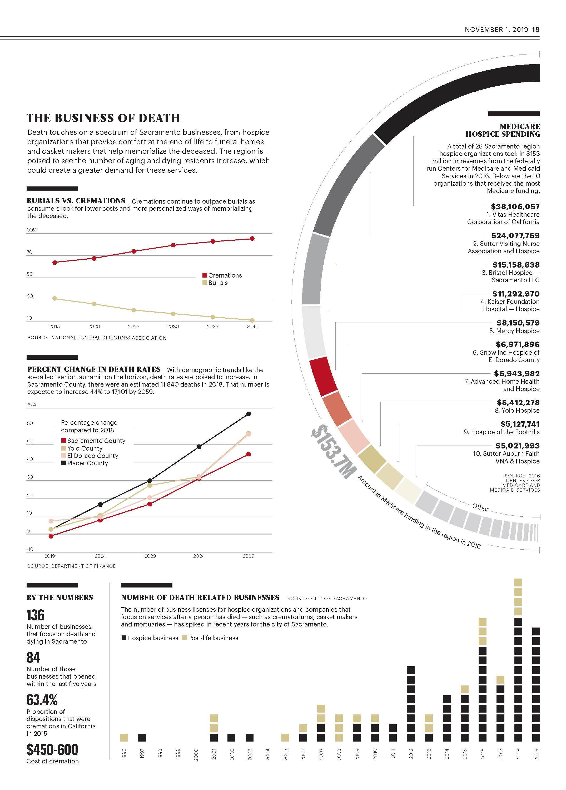

Sacramento Business Journal
Business. Created in Infogram and Adobe Illustrator. Collaborated with reporters and editors.

Award of Excellence from the Society for News Design for Cover Story/Spread.


First Place from the California News Publishers Association for Informational Graphic.